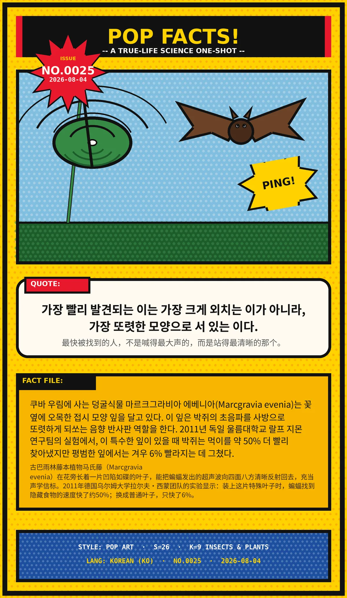

가장 빨리 발견되는 이는 가장 크게 외치는 이가 아니라, 가장 또렷한 모양으로 서 있는 이다.（最快被找到的人，不是喊得最大声的，而是站得最清晰的那个。）
쿠바 우림에 사는 덩굴식물 마르크그라비아 에베니아(Marcgravia evenia)는 꽃 옆에 오목한 접시 모양 잎을 달고 있다. 이 잎은 박쥐의 초음파를 사방으로 또렷하게 되쏘는 음향 반사판 역할을 한다. 2011년 독일 울름대학교 랄프 지몬 연구팀의 실험에서, 이 특수한 잎이 있을 때 박쥐는 먹이를 약 50% 더 빨리 찾아냈지만 평범한 잎에서는 겨우 6% 빨라지는 데 그쳤다.（古巴雨林藤本植物马氏藤（Marcgravia evenia）在花旁长着一片凹陷如碟的叶子，能把蝙蝠发出的超声波向四面八方清晰反射回去，充当声学信标。2011年德国乌尔姆大学拉尔夫·西蒙团队的实验显示：装上这片特殊叶子时，蝙蝠找到隐藏食物的速度快了约50%；换成普通叶子，只快了6%。）
冷知识由执笔的模型自行查证。逐条断言、来源与所引原句存档在纯文字副本里，未经程序逐字校验，留作事后核实。